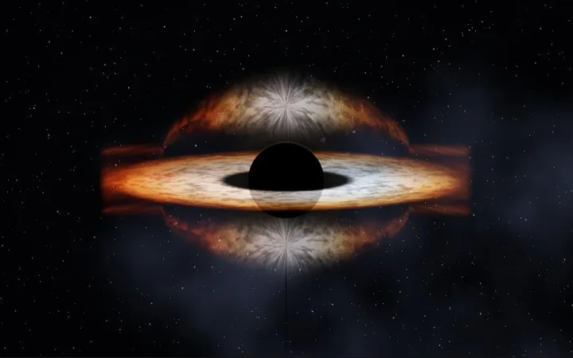
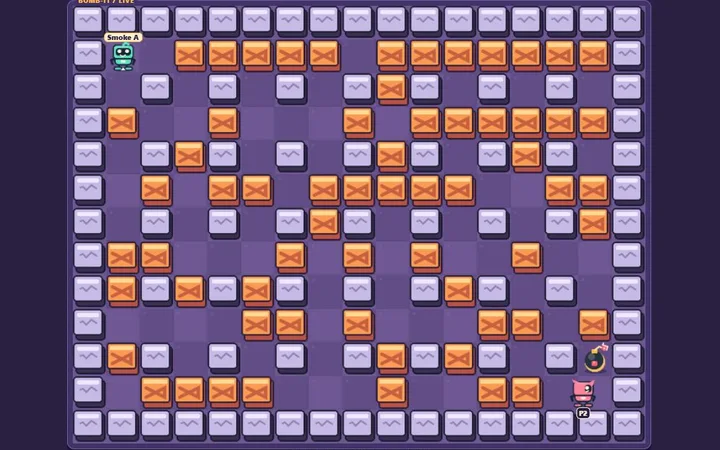
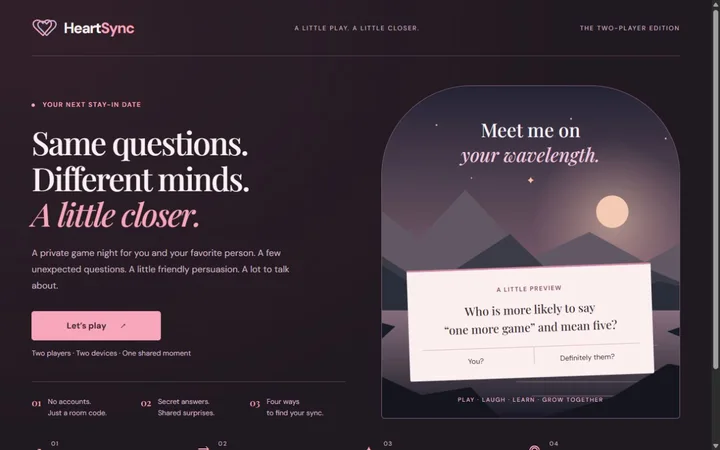
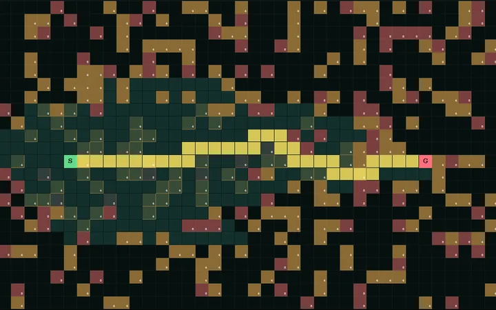

Black Hole — GLSL Lensing Lab
Light bends. Reality takes a small creative liberty.
enter event horizonMechatronics Bs. of Science • Projects, random ideas & more.

Light bends. Reality takes a small creative liberty.
enter event horizon

